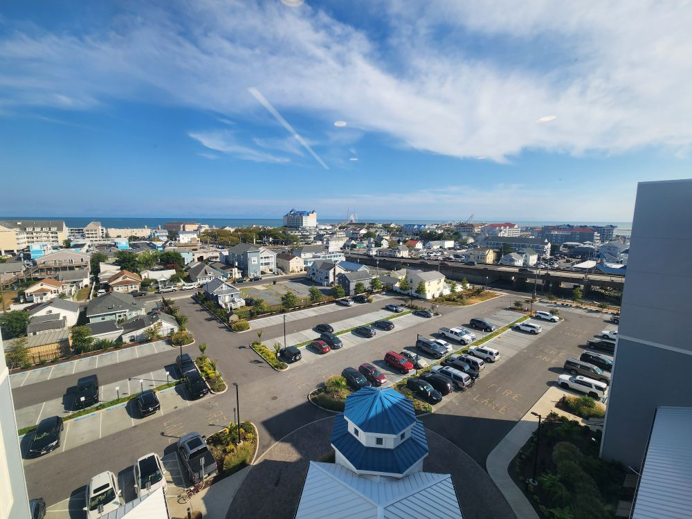
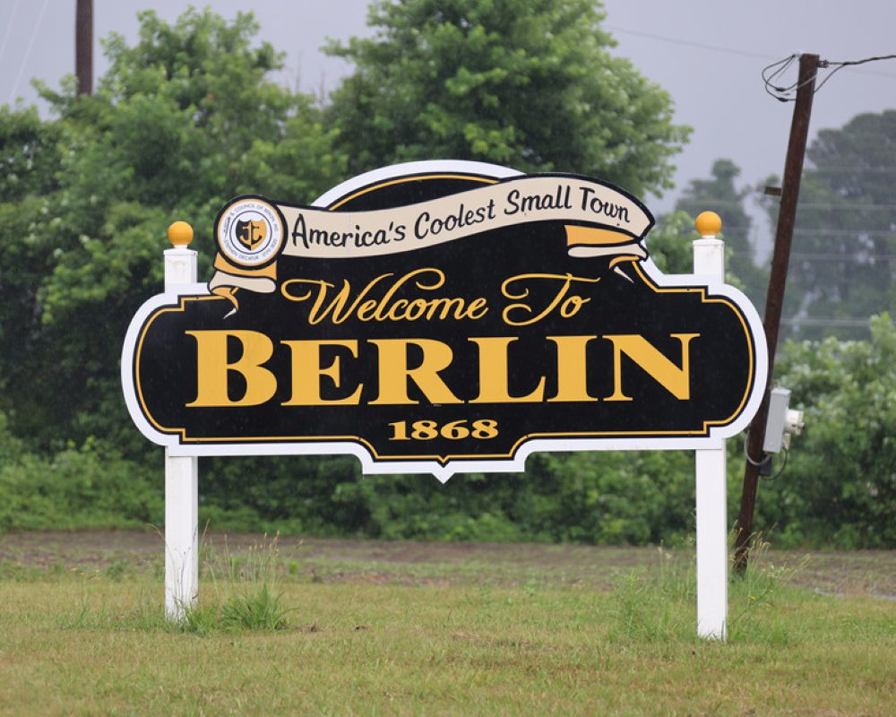
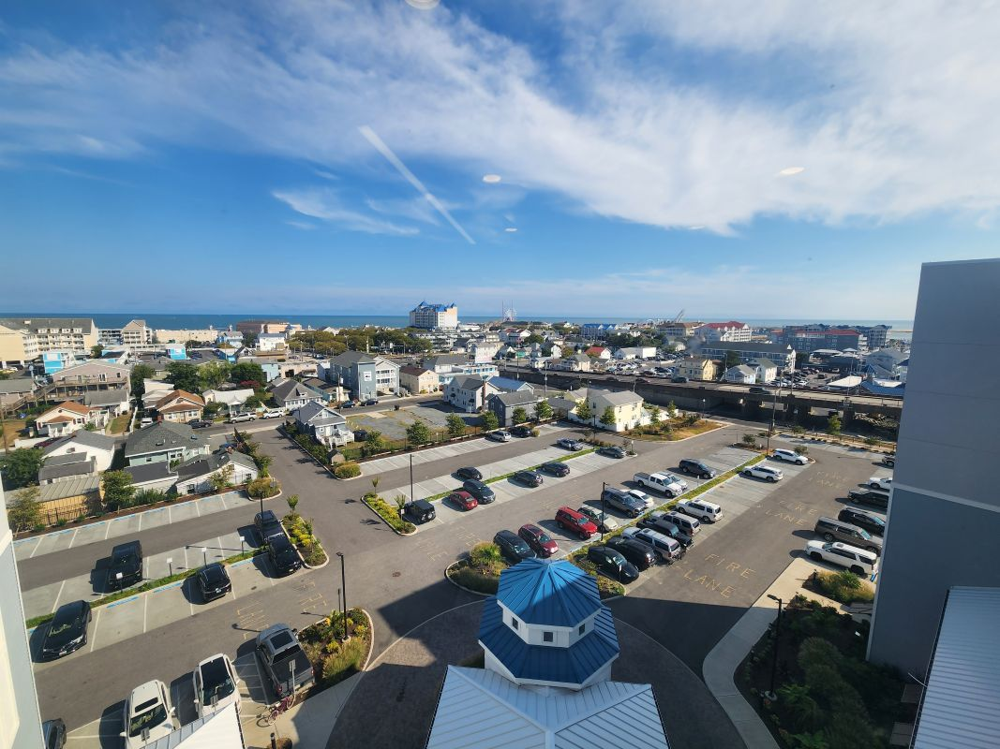

Ocean City
Popular for vacation homes, condos, and water views. Ocean City offers boardwalk access, seasonal events, and a vibrant rental market for investors.
Understanding each neighborhood’s character, commute times, and local amenities helps you choose a home that fits your lifestyle. Below are a few of the areas we frequently serve in Coastal Maryland.

Popular for vacation homes, condos, and water views. Ocean City offers boardwalk access, seasonal events, and a vibrant rental market for investors.

A charming historic town with a strong sense of community. Berlin features local shops, festivals, and a mix of classic homes and newer communities.

Salisbury offers more space and value, with neighborhoods suited for first-time buyers, growing households, and those seeking a quieter pace.